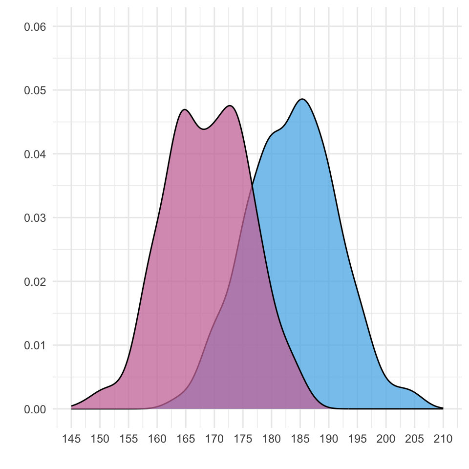
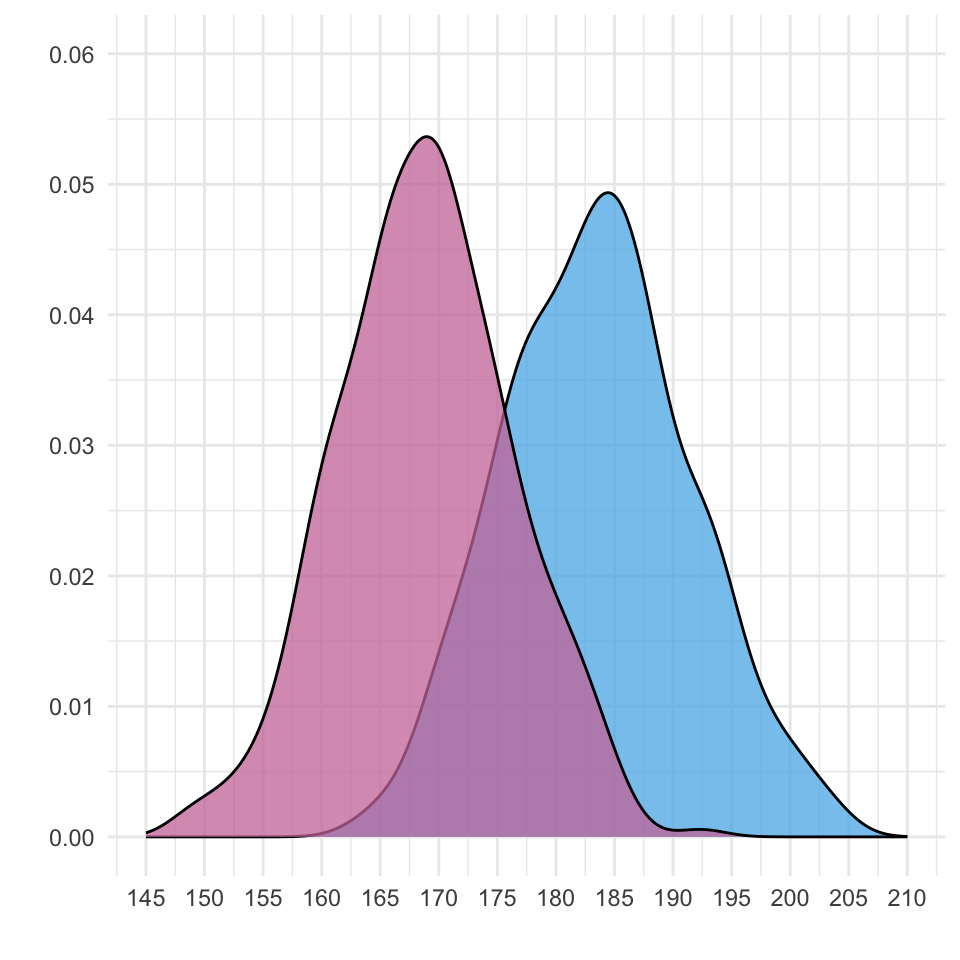
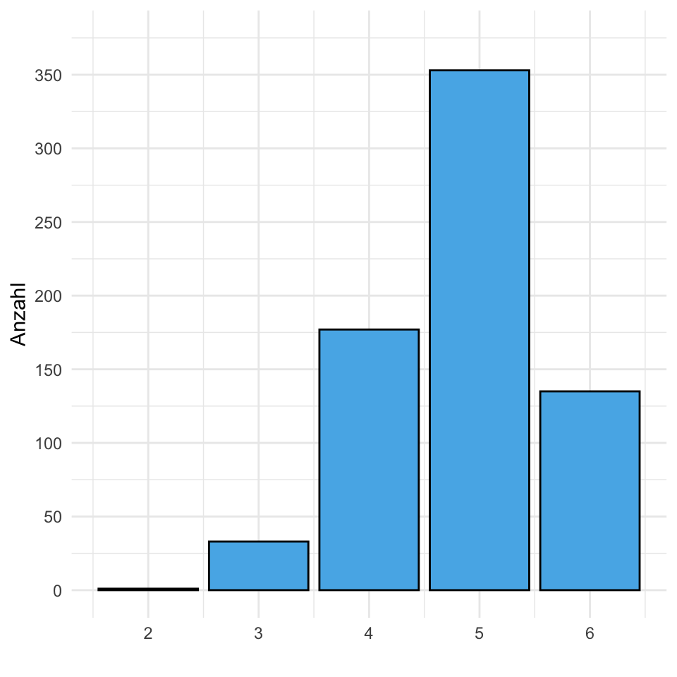
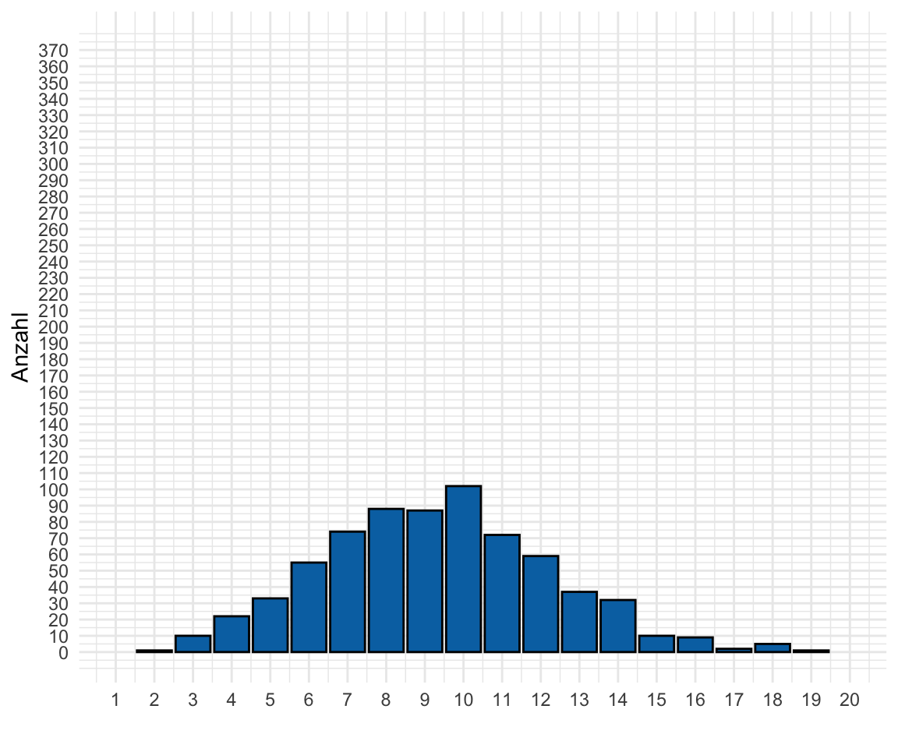
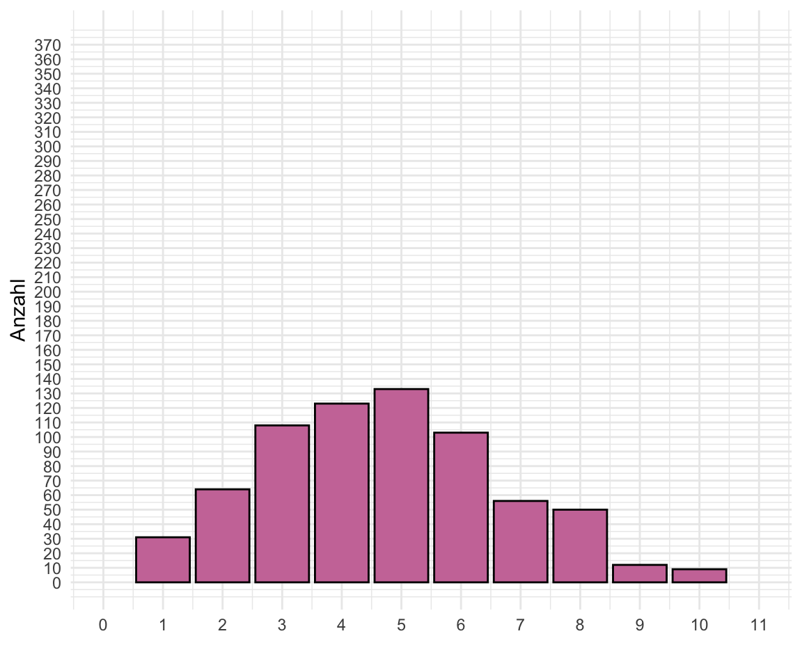
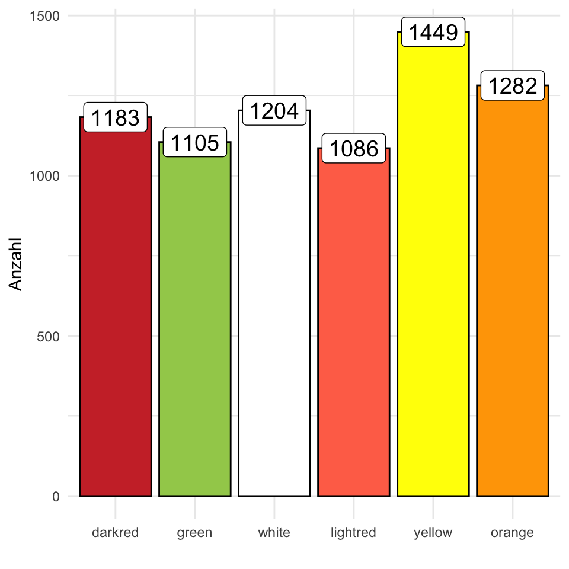

17 Verteilung von Daten
Version vom September 29, 2022 um 17:10:09
Wir besuchen gerne die R Shiny App The distribution zoo um mehr über die verschiedenen Verteilungen und deren Parameter zu erfahren.
In diesem Kapitel wollen wir uns mit Verteilungen beschäftigen. Dormann (2013) liefert eine weitreichende Übersicht über verschiedene Verteilungen. Wir wollen uns in diesem Kapitel mit folgenden Verteilungen beginnen.
- der Normalverteilung, die Glockenkurve oder auch Gaussian im englischen Sprachgebrauch genannt, die kontinuierliche Zahlen repräsentiert
- der Poissonverteilung, die diskrete Zähldaten repräsentiert.
Wir wollen uns jetzt die verschiedenen Verteilungen einmal in der Anwendung anschauen. Dabei lassen wir viel Mathematik recht und links liegen. Du kannst bei Dormann (2013) mehr zu dem Thema statistische Verteilungen anlesen.
In diesem Kapitel geht es erstmal um das Grundverständnis, das Daten einer Verteilung folgen. Oder noch konkreter, dass unser Outcome \(y\) einer Verteilung folgt. Wir müssen später unseren Alogrithmen sagen, welcher Verteilung \(y\) entspringt, sonst können wir keine korrekte Analyse unser Daten rechnen.

Wir halten den mathematischen Teil zu den Verteilungen sehr kurz oder überspringen den Teil ganz. Wir brauchen die Idee der Verteilungen, weil wir später den Methoden sagen müssen wie unser Outcome \(y\) verteilt ist. Nur dann können wir die Daten richtig auswerten.
17.1 Genutzte R Pakete für das Kapitel
Wir wollen folgende R Pakete in diesem Kapitel nutzen.
pacman::p_load(tidyverse, magrittr, see, readxl)Am Ende des Kapitels findest du nochmal den gesamten R Code in einem Rutsch zum selber durchführen oder aber kopieren.
17.2 Daten für Verteilungen
Damit wir uns auch eine Verteilung anschauen können bruachen wir viele Beobachtungen. Wir haben das ja schon bei den Histogrammen gesehen, wenn wir ein aussagekräftiges Histogramm erstellen wollen, dann brauchen wir viele Beobachtungen. Daher nehmen wir für dieses Kapitel einmal den Gummibärchendatensatz und schauen uns dort die Variablen gender, height, count_bears und count_color einmal genauer an. Wie immer nutzen wir die Funktion select() um die Spalten zu selektieren. Abschließend verwandeln wir das Geschlecht gender und das module noch in einen Faktor.
gummi_tbl <- read_excel("data/gummibears.xlsx") %>%
select(year, module, gender, height, count_bears, count_color,
most_liked) %>%
mutate(gender = as_factor(gender),
module = as_factor(module))Wir erhalten das Objekt gummi_tbl mit dem Datensatz in Tabelle tbl-data-dist-gummi nochmal dargestellt.
| year | module | gender | height | count_bears | count_color | most_liked |
|---|---|---|---|---|---|---|
| 2018 | FU Berlin | m | 193 | 9 | 3 | lightred |
| 2018 | FU Berlin | w | 159 | 10 | 5 | yellow |
| 2018 | FU Berlin | w | 159 | 9 | 6 | white |
| 2018 | FU Berlin | w | 180 | 10 | 5 | white |
| 2018 | FU Berlin | m | 180 | 10 | 6 | white |
| 2018 | FU Berlin | m | NA | 10 | 5 | white |
| … | … | … | … | … | … | … |
| 2022 | Statistik | m | 197 | 9 | 4 | white |
| 2022 | Statistik | m | 180 | 10 | 3 | green |
| 2022 | Statistik | m | 187 | 11 | 5 | darkred |
| 2022 | Statistik | m | 186 | 10 | 5 | green |
| 2022 | Statistik | m | NA | 9 | 4 | darkred |
| 2022 | Statistik | NA | NA | 10 | 6 | NA |
Wir nutzen jetzt die Daten einmal um uns die Normalverteilung und die Poissonverteilung am Beispiel näher anzuschauen.
17.3 Die Normalverteilung
Wir sprechen in der Statistik auch von Verteilungsfamilien. Daher schreiben wir in R auch family = gaussian, wenn wir sagen wollen, dass unsere Daten einer Normalverteilung entstammen.
Wenn wir von de Normalverteilung sprechen, dann schreiben wir ein \(\mathcal{N}\) Symbol - also ein großes N mit Serifen. Die Normalverteilung sieht aus wie eine Glocke, deshalb wird die Normalverteilung auch Glockenkurve genannt. Im englischen Sprachgebrauch und auch in R nutzen wir dagegen die Bezeichnung nach dem “Entdecker” der Normalverteilung, Carl Friedrich Gauß (1777 - 1985). Wir nennen daher die Normalverteilung auch Gaussian-Verteilung.
Parameter sind Zahlen, die eine Verteilungskurve beschreiben.
Eine Normalverteilung wird ruch zwei Verteilungsparameter definiert. Eine Verteilung hat Parameter. Parameter sind die Eigenschaften einer Verteilung, die notwendig sind um eine Verteilung vollständig zu beschreiben. Im Falle der Normalverteilung brauchen wir zum einen den Mittelwert \(\bar{y}\), der den höchsten Punkt unserer Glockenkurve beschreibt. Zum anderen brauchen wir auch die Standardabweichung \(s^2_y\), die die Ausbreitung oder Breite der Glockenkurve bestimmt. Wir beschreiben eine Normalverteilung wie folgt.
\[ \mathcal{N}(\bar{y}, s^2_y) \] Im Falle der Normalverteilung brauchen wir einen Paramter für den höchsten Punkt der Kurve, sowie einen Parameter für die Ausbreitung, also wie weit geht die Kurve nach links und nach rechts. Je nach \(\bar{y}\) und \(s^2_y\) können wir verschiedenste Normalverteilungen vorliegen haben. Eine Sammlung von Normalverteilungen nennen wir auch Familie (eng. family).
Wir haben Varianzhomogenität vorliegen, wenn \(s^2_{1} = s^2_{2} = s^2_{3}\) sind. Wir haben Varianzheterogenität vorliegen, wenn \(s^2_{1} \neq s^2_{2} \neq s^2_{3}\) sind.
In Abbildung fig-normal-02 sehen wir verschiedene Normalverteilungen mit unterschiedlichen Mittelwerten. In Abbildung fig-normal-02-1 sehen wir eine Varianzhomogenität vorliegen, da die Varianzen in allen drei Normalverteilungen gleich sind. Wir können auch schreiben, dass \(s^2_{1} = s^2_{2} = s^2_{3} = 2\). In Abbildung fig-normal-02-2 haben wir Varianzheterogenität vorliegen, da die Varianzen der Normalverteilungen ungleich sind. Wir können hier dann schreiben, dass \(s^2_{1} = 6 \neq s^2_{2} = 1 \neq s^2_{3} = 3\) sind. Häufig gehen statistische Verfahren davon aus, dass wir Varianzhomogenität über die Gruppen und daher auch die Normalverteilungen vorliegen haben. Konkret, wenn wir die Sprungweiten in[cm] von Hunde- und Katzenflöhen mit einander vergleichen wollen, dann gehen wir erstmal davon aus, dass die Mittelwerte verschieden sind, aber die Varianzen gleich sind.

In einer Normalverteilung liegen 68% der Werte innerhalb \(\bar{y}\pm 1 \cdot s_y\) und 95% der Werte innerhalb \(\bar{y}\pm 2 \cdot s_y\)
Wenn wir eine Normalverteilung vorliegen haben, dann liegen 68% der Werte plus/minus einer Standardabweichung vom Mittelwert. Ebenso liegen 95% der Werte plus/minus zwei Standabweichungen vom Mittelwert. Über 99% der Werte befinden sich innerhalb von drei Standardabweichungen vom Mittelwert. Diese Eigenschaft einer Normalverteilung können wir später noch nutzen um abzuschätzen, ob wir einen relevanten Gruppenunterschied vorliegen haben oder aber ob unsere Daten unnatürlich breit streuen.
Wir nutzen das Wort approximativ wenn wir sagen wollen, dass ein Outcome näherungsweise normalverteilt ist.
Schauen wir uns die Normalverteilung einmal am Beispiel unserer Gummibärchendaten und der Körpergröße der Studierenden an. Wir färben das Histogramm nach dem Geschlecht ein. In Abbildung fig-normal-01 sehen wir das Ergebnis einmal als Histogramm und einmal als Densityplot dargestellt. Wir können annehmen, dass die Größe approximativ normalverteilt ist.

Wir können die Funktion rnorm() nutzen um uns zufällige Zahlen aus der Normalverteilung ziehen zu lassen. Dazu müssen wir mit n = spezifizieren wie viele Beobachtungen wir wollen und den Mittelwert mean = und die gewünschte Standardabweichung mit sd = angeben. Im Folgenden einmal ein Beispiel für die Nutzung der Funktion rnorm() mit zehn Werten.
rnorm(n = 10, mean = 5, sd = 2) %>% round(2) [1] 6.97 6.24 5.59 5.27 6.30 4.91 4.13 4.92 3.67 4.42Du kannst ja mal den Mittelwert und die Standardabweichung der zehn Zahlen ausrechnen. Da wir es hier mit einer Stichprobe mit zehn Beobachtungen zu tun haben, wird der Mittelwert \(\bar{y}\) und die Standardabweichung \(s_y\) sich von den vorher definierten Mittelwert \(\mu_y = 5\) und Standardabweichung \(\sigma_y = 2\) der Grundgesamtheit unterscheiden.
Wir können auch aus unseren Gummibärchendaten für die Körpergröße in [cm] jeweils den Mittelwert und die Standardabweichung getrennt für die Geschlechter berechnen und dann die theoretische Normalverteilung zeichenen. In Abbildung fig-normal-03-2 und Abbildung fig-normal-03-4 sehen wir die Verteilung der theoretischen Werte, wenn wir die Mittelwerte und die Standardabweichung aus den Verteilungen in Abbildung fig-normal-03-1 schätzen.



17.4 Die Standardnormalverteilung
Es gibt viele Normalverteilungen. Aber es gibt eine besondere Normalverteilung, so dass diese Verteilung einen eigenen Namen hat. Wir sprechen von der Standardnormalverteilung, wenn der Mittelwert gleich Null ist und die Standardabweichung gleich Eins. Du siehst hier nochmal die Standardnormalverteilung ausgeschrieben.
\[ \mathcal{N}(0, 1) \]
Folgende Eigenschaften sind der Standardnormalverteilung gegeben. Die Standardnormalverteilung hat eine Fläche von \(A = 1\) unter der Kurve. Darüber hinaus liegen 95% der Werte zwischen -2 und 2. Die einzelnen Werte einer Standardnormalverteilung nennen wir \(z\)-Werte. Wenn wir eine beliebige Normalverteilung in eine Standardnormalverteilung überführen wollen so machen wir die Umwandlung mit der \(z\)-Transformation.
17.5 Die Poissonverteilung
Eine weitere wichtige Verteilung ist die Poissonverteilung. Die Poissonverteilung ist eine diskrete Verteilung. Daher kommen nur ganze Zahlen vor. Damit bildet die Poissonverteilung die Zähldaten ab. Wenn wir also etwas Zählen, dann ist diese Variable mit den gezählten Ergebnissen poissonverteilt. Im Folgenden sehen wir die Poissonverteilung einmal dargestellt.
\[ \mathcal{Pois}(\lambda) \]
Im Gegensatz zur Normalverteilung hat die Poissonverteilung nur einen Parameter. Den Lageparameter \(\lambda\) ausgedrückt durch den griechischen Buchstaben Lambda. Eine Poissonverteilung mit \(\mathcal{Pois}(4)\) hat den höchsten Punkt bei vier. Nun hat die Poissonverteilung hat mehrere Besonderheiten. Da die Poissonverteilung keinen Streuungsparameter hat, steigt mit dem \(\lambda\) auch die Streuung. Daher haben Poissonverteilungen mit einem großen \(\lambda\) auch eine große Streuung. ie Ausbreitung der Kurve ist eine Funktion von \(\lambda\) und steigt mit \(\lambda\) an. Du kannst diesen Zusammenhang in Abbildung fig-pois-00 beobachten.
Darüber hinaus kann eine Poissonverteilung nicht negativ werden. Es kann keine kleinere Zahl als die Null geben. Durch die diskreten Zahlen haben wir auch immer mal Lücken zwischen den Balken der Poissonverteilung. Das passiert besonders, wenn wir eine kleine Anzahl an Beobachtungen haben. Abschließend konvergiert die Poissonverteilung bei großen \(\lambda\) hin zu einer Normalverteilung.
Schauen wir uns nun einmal die Poissonverteilung im Beispiel an. In Abbildung fig-pois-01 sehen wir die Histogramme der Anzahl an Gummibärchen in einer Tüte und die Anzahl an Farben in einer Tüte. Da wir es hier mit Zähldaten zu tun haben, könnte es sich um eine Poissonverteilung handeln. Wie müssen uns nun die Frage stellen, ob die Gummibärchen in einer Tüte und die Anzahl an Farben in einer Tüte wirklich eine zufällige Realistierung sind. Daher eine zufällige Stichprobe der Grundgesamtheit. Wir können diese Annahme überprüfen in dem wir die theoretischen Werte für die beiden Poissonverteilung mit \(\mathcal{Pois}(10)\) und \(\mathcal{Pois}(5)\) genieren.


Wir können die Funktion rpois() nutzen um uns zufällige Zahlen aus der Poissonverteilung ziehen zu lassen. Dazu müssen wir mit n = spezifizieren wie viele Beobachtungen wir wollen und den Mittelwert lambda = angeben. Im Folgenden einmal ein Beispiel für die Nutzung der Funktion rpois() mit zehn Werten.
rpois(n = 10, lambda = 5) [1] 3 5 4 5 3 3 9 3 5 5Es gibt neben der Poissonverteilung auch die negative Binomialverteilung sowie die Quasi-Poissonverteilung, die es erlauben einen Streuungsparameter für die Poissonverteilung zu schätzen.
Wir können nun auch aus unseren Gummibärchendaten für die Anzahl an Bärchen in einer Tüte sowie die Anzahl an Farben in einer Tüte die theoretische Poissonverteilung berechnen. In Abbildung fig-pois-03 sehen wir die Verteilung der beobachteten Werte für Anzahl an Bärchen in einer Tüte sowie die Anzahl an Farben in einer Tüte und deren theoretischen Verteilung nach dem geschätzen \(\lambda = 10\) und \(\lambda = 5\). Wir sehen ganz klar, dass die beide Variablen keine Zufallsrealisierung sind. Zum einen haben wir das auch nicht erwartet, es gibt nicht mehr als sechs Farben und zum anderen ist zu vermuten, dass Haribo technisch in den Auswahlprozess eingreift. Wir haben auf jeden Fall eine sehr viel kleinere Streuung als bei einer klassischen Poissonverteilung anzunehmen wäre.



In Abbildung fig-gummi-years-count schauen wir uns nochmal an in wie weit sich die Füllung der Tütchen im Laufe der Jahre entwickelt hat. Die Daten werden ja schon seit 2018 erhoben. Wir schauen uns daher die Densityplot einmal aufgetrennt für die Jahre 2018 bis heute an. Das Jahr 2020 fehlt, da bedingt durch die Coronapandemie keine Präsenslehre stattfand. Wir sehen, dass sich die Verteilung anscheinend in dem Jahr 2022 langsam nach links zu weniger Bärchen in einer Tüte bewegt. Wir bleiben gespannt auf den weiteren Trend.

In Abbildung fig-gummi-mostliked betrachten wir die Verteilung der am meisten gemochten Gummibärchen aufgeteilt nach dem angegebenen Geschlecht im Vergeich zu den Gummibärchen in den Tütchen. Wir sehen, dass Haribo die Tütchen sehr gleichmäßig verteilt und auf die Geschmäcker keinerlei Rücksicht nimmt.


17.6 Weitere Verteilungen

Wir besuchen gerne die R Shiny App The distribution zoo um mehr über die verschiedenen Verteilungen und deren Parameter zu erfahren.
In der nächsten Zeit werden noch weitere gängige Verteilungen ergänzt. Bis dahin können die Basic Probability Distributions in R nochmal extern nachgeschaut werden.
Im Weiteren liefert Dormann (2013) eine gute Übersicht über verschiedene Verteilungen.
Referenzen
Skript Bio Data Science - 17 Verteilung von Daten Skript Bio Data Science